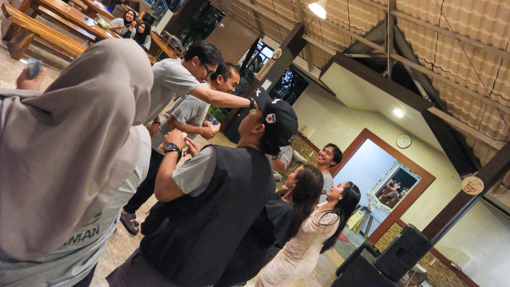

Why your annual kick off needs a plot, not another rundown.
People don’t remember agenda density. They remember tension, turning points, and where they fit inside the story.
Field notes Ideas worth taking into the room
Practical notes on participation, production, culture, and why the best company events are designed like stories.

People don’t remember agenda density. They remember tension, turning points, and where they fit inside the story.
Three ways to move a room from passive audience to active contributor.
Read dispatch ↗A look at the plans, contingencies, and human judgment keeping events alive.
Read dispatch ↗Why team connection grows from psychological safety, not compulsory karaoke.
Read dispatch ↗